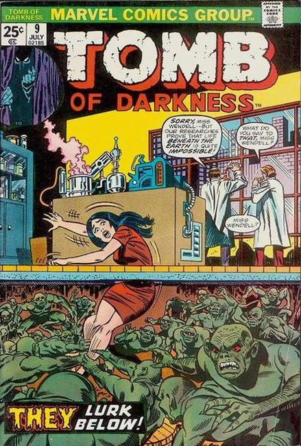

Series: 15 issues (#9 - 23) 1974
Cover by Larry Lieber and Frank Giacoia
Publisher: Marvel
Numbering continues from Beware (Marvel, 1973 series) #8
All reprints.
- "The Man in the Tomb!" (from Mystic 26); When a scientist realizes that, without his invention, humanity will perish after another fifty years of atomic warfare he decides this is preferable to having the cycle begin all over again.
- "Juggernaut", written by Paul S. Newman, with art by Gene Colan (from Adventure in Terror 24); A priest convinces followers to sacrifice themselves under the wheels of a heavy cart so that he can steal their belongings.
- "Good Morning, Mr. Smith!" with art by Vic Carrabotta (also from Mystic 26); A detached head gets its revenge by using hypnotic compulsion to remove the surgeon's head and place it in the life support machinery instead.
- "The Living and the Dead!" (from Mystic 27); Oscar Holmes, a man who does not believe in the supernatural, steals the plots of stories from his friend John, then publishes them as his own stories.